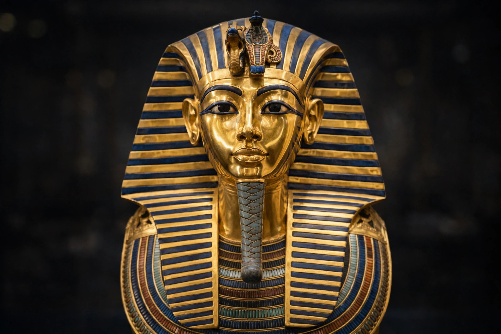

| Pharaoh | |
|---|---|
| Meaning | Egyptian pr-ꜥꜣ, 'Great House' |
| Period | c. 3100 BC – 30 BC (term in common use from New Kingdom) |
| Last pharaoh | Cleopatra VII (and Caesarion) |

Pharaoh is the vernacular term — derived from Egyptian pr-ꜥꜣ, 'Great House', originally the royal palace — for the monarchs of ancient Egypt from the First Dynasty (c. 3100 BC) until the Roman annexation in 30 BC. The king was political and religious leader, regarded as living Horus and son of Ra, guarantor of maat (cosmic order).
From the New Kingdom the king's titulary comprised five names (Horus, Two Ladies, Golden Horus, King of Upper and Lower Egypt, and Son of Ra). Regalia included the nemes headdress, the double crown (pschent), crook and flail, and false beard. Queens and royal women, such as Hatshepsut, could themselves rule as pharaoh.
Pharaohs commanded the army, administration and temple building — from the pyramids of Giza and the temples of Karnak to Abu Simbel. Succession was usually hereditary within dynasties grouped into Old, Middle and New Kingdoms, interspersed with Intermediate Periods and foreign rulers including Kushites, Persians and Ptolemies.
Royal tombs in the Valley of the Kings, mummification and funerary texts such as the Book of the Dead prepared the pharaoh for the afterlife. The last native pharaoh is usually considered Nectanebo II (died 342 BC); Ptolemaic rulers and Cleopatra VII continued the office until Rome absorbed Egypt.